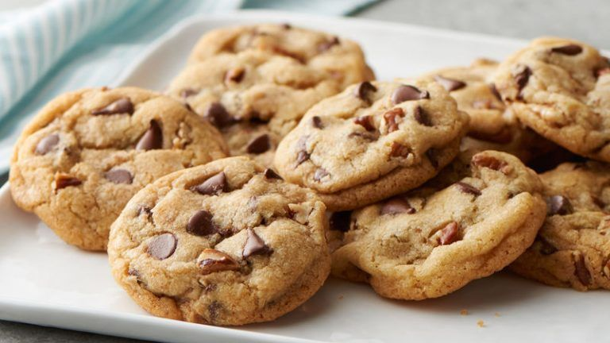

- 250 grs harina
- 150 grs azúcar
- 2 huevos M
- 85 grs mantequilla
- 1 cucharilla levadura
- 100 grs pepitas de chocolate
- 1 cucharilla esencia de vainilla
- Coge un bol grande, echa la harina, el azúcar, los dos huevos, la levadura y la esencia de vainilla. Mezclar harina con los huevos
- En paralelo, pon 3 cucharadas de mantequilla en un recipiente y caliéntalo durante unos segundos en el microondas hasta que se derrita. Calentar en microondas
- Agrega la mantequilla al resto de ingredientes y mezcla todo bien hasta que quede una masa homogénea. Puedes hacerlo directamente o ayudarte de una amasadora. Déjala en la nevera entre 15 y 30 minutos hasta que se enfríe. Guardar en la nevera la masa
- Saca la masa y empieza a hacer bolas pequeñas y colócalas sobre la bandeja dejando espacio entre ellas. Cuando las tengas, échale un poco de pepitas por encima a tu gusto. Opcional: Para hacer cookies con formas y prensadas puedes hacerte con un set de decoración que venden bastante económico por internet como éste. Bolitas de masa de cookies en una bandeja para horno
- Precalienta el horno a unos 180 grados y, una vez caliente, introduce la bandeja y déjala durante un cuarto de hora hasta que veas que tengan ese color dorado y apetitoso. Precalentar el horno con harina Deja que pierdan algo de temperatura y sírvelas en la mesa.
